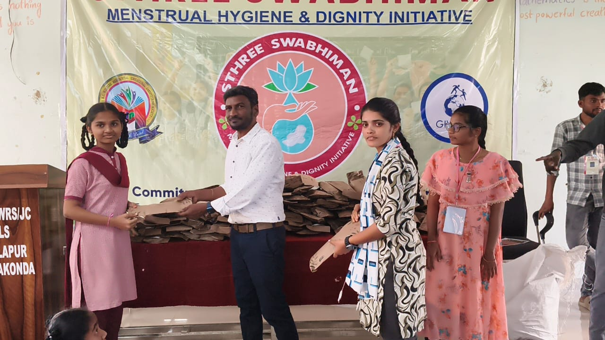
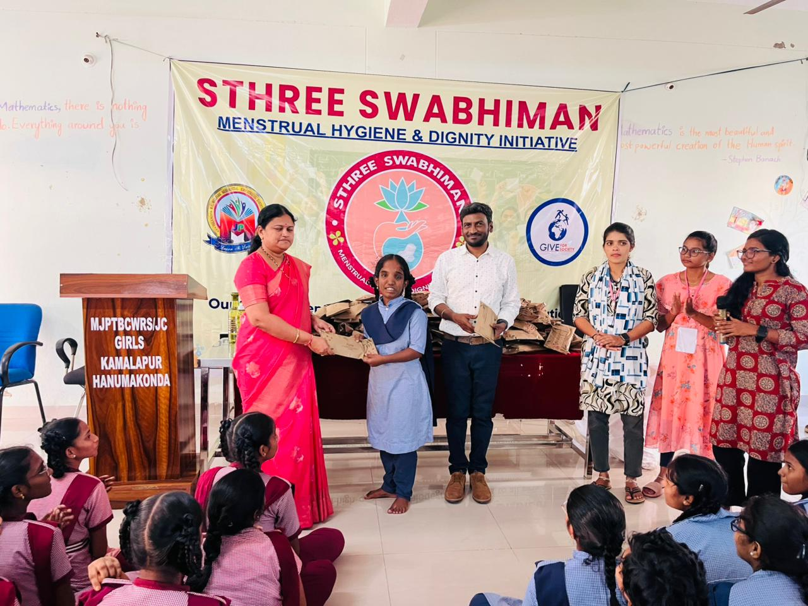
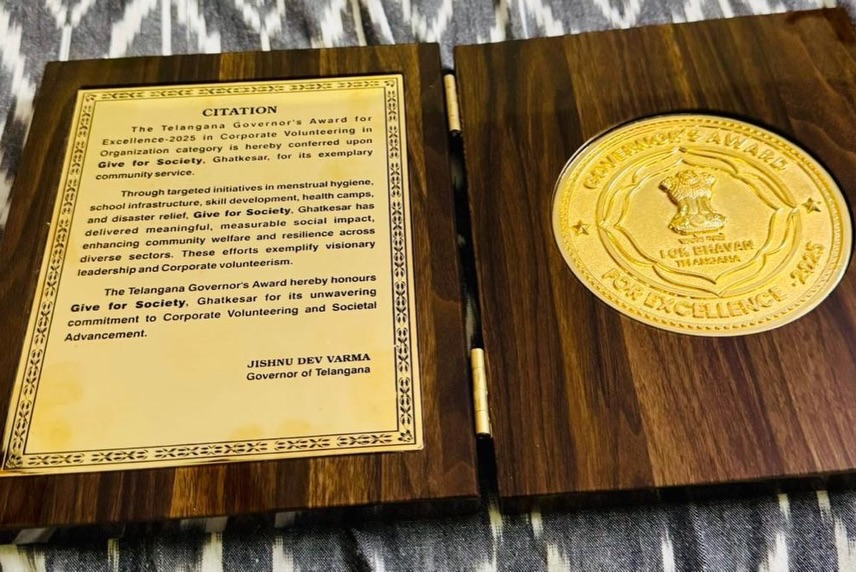
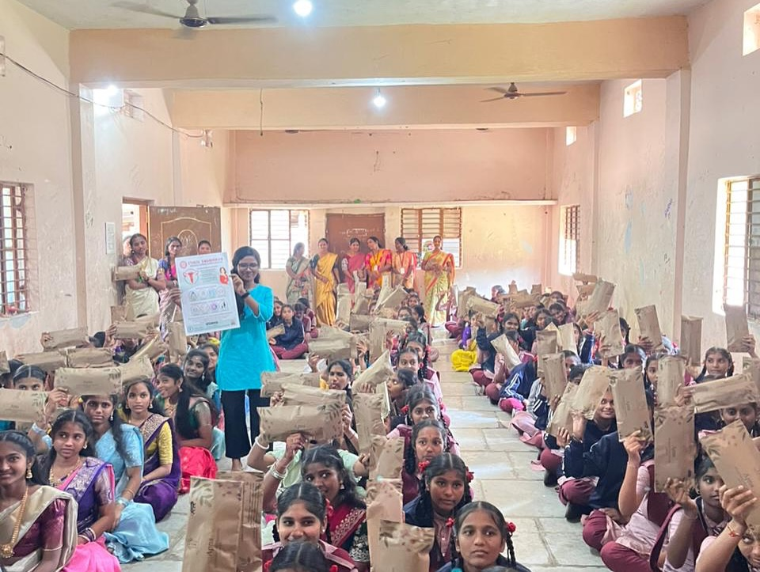

Roots
Raised with the lived realities of rural Telangana, small-farmer families and first-generation opportunity.
A son of the soil, Telangana movement voice, technology professional and Give For Society founder bringing roots, discipline and proven service to public life.

The profile is built on four pillars: native roots, movement identity, a clean professional record and service already happening on the ground.
Raised with the lived realities of rural Telangana, small-farmer families and first-generation opportunity.
Shaped by the Telangana movement and its call for dignity, identity and equitable development.
A long technology career with Microsoft, Infosys, Cognizant and Wipro, grounded in discipline and accountability.
Give For Society has served rural and underserved Telangana communities since 2017.

“I did not read about rural hardship. I lived it.”
Born into a small farmer family and raised by hard-working, labour-based parents, Satya grew up with the everyday realities of rural Telangana: limited opportunity, economic hardship and unequal access.
His education came through government schools and social-welfare hostels. That upbringing is the lens through which he understands the people of Sirpur–Kaghaznagar.
“The movement taught me what equal dignity is worth.”
The Telangana movement deepened Satya's understanding of regional inequality, educational and healthcare gaps, unemployment, identity, self-respect and equitable development.
In 2011, he helped build a movement-oriented social platform, turning conviction into organised grassroots engagement before it became a formal organisation.

Twenty-five years in the global technology industry have shaped a delivery-first approach to systems, governance, transparency and measurable execution.
Structured systems, clean processes and measurable delivery.
A professional record built on transparency and trust.
Turning clear vision into practical outcomes on the ground.
Financial discipline and integrity, free of dependency.
Satya did not wait for a position to begin serving. Since 2017, Give For Society has carried work into education, women's dignity, healthcare and digital access.
Stronger government schools, rural learning and access for first-generation learners.
Health, dignity and participation for women and adolescent girls.
Preventive health awareness, screening and rural outreach.
Technology, digital skills and opportunity for rural youth.
The recognition reflects sustained service and a public-minded approach rooted in dignity, inclusion and practical work for rural communities.

Representation must reach the last village and the last household through dignity, equal opportunity and inclusion, not dependency.
“This is the soil that raised me — and the people I intend to serve.”
Sirpur–Kaghaznagar is the place that made Satya: its villages, farmers, tribal hamlets, working families and young people looking for a future.
He returns not as a stranger, but as a son ready to give back with a constituency-first development agenda.

Government schools, digital classrooms and STEM access for rural and tribal students.
Preventive care, screening and outreach so basic health is never too far away.
Digital, AI and employability training to keep youth from migrating away.
Health, safety, livelihoods and leadership for women and adolescent girls.
Rural livelihoods, allied incomes and stronger village economies.
Digital access, basic infrastructure and services that link every hamlet in.
“I am ready to bring my experience, networks and record of service into the right platform — and to work for this constituency.”
“I bring my record, my discipline and my roots to the service of Sirpur–Kaghaznagar — and to any platform committed to its people.”